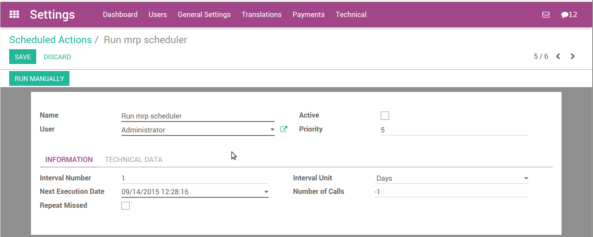

What is a scheduler
The scheduler is the calculation engine which plans and prioritises production and purchasing automatically according to the rules defined on products. By default, the scheduler is set to run once a day (Odoo automatically creates a Scheduled Action for this).
Calculating Requirements / Scheduling
Scheduling only validates procurements that are confirmed but not yet started. These procurement reservations will themselves start production, tasks or purchases depending on the configuration of the requested product.
You take into account the priority of operations when starting reservations and procurements. Urgent requests, those with a date in the past, or requests with a date earlier than the others will be started first. In case there are not enough products in stock to satisfy all the requests, you can be sure that the most urgent requests will be produced first.
Configure and run the scheduler
Run the scheduler manually
This feature is not visible by default. You have to enable debug mode to see this. To enable debug mode, go to and click on Activate the developer mode.
You can also start the scheduler manually from the menu . The scheduler uses all the relevant parameters defined for products, suppliers and the company to determine the priorities between the different production orders, deliveries and supplier purchases.

Configure and run the scheduler (only for advanced users)
This feature is not visible by default. You have to enable debug mode to see this. To enable debug mode, go to and click on Activate the developer mode.
You can set the starting time of the scheduler by modifying the corresponding action in the menu . Modify the Run mrp Scheduler configuration.
